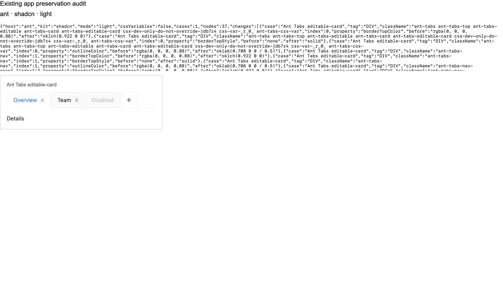
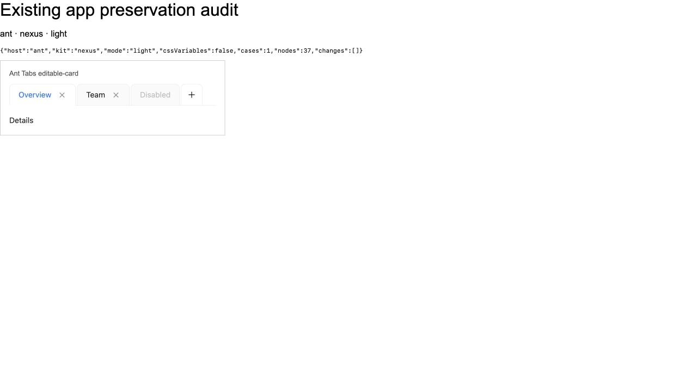

19 October 2026. Installed MUI 9.5.0, Ant 6.6.6, copied shadcn radix-nova CSS plus published variant helpers, local Nexus source. Findings apply to this setup and cascade, not every possible consumer configuration.
No default MUI/Ant semantic-token collision with shadcn was found. MUI uses --mui-* and Ant uses --ant-*; their dynamically generated runtime CSS was inspected with CSS-variable mode enabled. A literal name scan of installed host source found no overlap with the generic tokens declared by the tested shadcn CSS. The existing custom-token fixture does collide, but it is not a default MUI/Ant token consumer.
The additional visible differences are caused by Tailwind Preflight filling gaps in host component styling. These are visual regressions, not proof that the controls become unusable. Removing only Preflight eliminates all three new differences below.
| Component / condition | Winning CSS and existing dependency | Measured result with shadcn integration | Nexus / causal control |
|---|---|---|---|
| Ant Tabs, editable-card, close buttons | Preflight universal padding:0 replaces browser button padding. Ant .ant-tabs-tab-remove defines margins, font, border and background but no padding. | Close button horizontal padding 6px → 0; width 24px → 12px. Two tab items each shrink 12px. Navigation row 355.234px → 331.234px. | Nexus preserves baseline. shadcn without Preflight also preserves it. Line/card variants did not show this size change. |
| MUI AccordionSummary with plain text | Preflight button {font:inherit} replaces browser button font; no explicit summary typography supplies the missing value. | Arial 13.333px → Roboto 16px; content height 15.5px → 24px. | Nexus preserves baseline. No-Preflight control preserves baseline. An explicit MUI Typography child keeps the visible text stable. |
| Ant Skeleton title | Preflight h3 {font-size:inherit;font-weight:inherit}. Existing reset margin-bottom:.5em depends on the resulting font size. | Font basis 16.38px → 14px; bottom margin 8.19px → 7px; container height 24.1875px → 23px. Small layout shift, not severe breakage. | Nexus and no-Preflight control preserve baseline. |
| Custom app button/card using --primary, --primary-foreground, --radius | Later unscoped shadcn :root/.dark variables reuse the same generic names. | Teal becomes neutral; radius 16px → 10px. | Nexus --nx-* does not overwrite these names. Conditional custom-app conflict; not a MUI/Ant default collision. |
| Native form, link, heading/list/table inside host app | Preflight global native-element reset. | Native controls lose backgrounds/borders, links lose underline, heading/list/table defaults change. | Nexus avoids these resets. Dark provider color-scheme can still alter native colors. |
| Case | CSS that changes or matches | Why the visible component holds |
|---|---|---|
| MUI Typography h1–h6 | Global heading reset matches; universal border style/color and outline color change. | Explicit MUI typography wins over layered reset. Border width remains zero; no outline is drawn in tested resting state. |
| MUI AccordionSummary + Typography child | Summary button inherited font changes. | Child Typography specifies its own font, so visible label and content height remain unchanged. |
| MUI Checkbox / Switch / Radio / Rating | Hidden native inputs inherit different fonts/colors. | Visible SVGs, tracks and stars are styled separately. Hidden-input differences are not screenshot failures. |
| MUI TextField, Ant Input and Select | Global input/reset selectors match; some wrapper border/outline values change. | Host classes supply explicit typography, padding, visible borders and colors. Tested sizes, error/disabled and appearance variants preserve visible styling. |
| Ant Table | Outer wrapper inherited color changes under shadcn body text-foreground. | Inner table/cells supply their own host color. No cell-text regression established. |
| MUI Divider | hr color changes to inherit. | Rendered divider border has an explicit MUI border color; changed text color does not repaint that border. |
| MUI/Ant semantic variables | Generic shadcn variables coexist with host prefixed variables. | No overlapping default semantic names were found; no automatic cascade of affected consumers can be inferred. |
Ant editable tabs: shadcn globals on the left, Nexus on the right. Compare tab/close-button widths; audit headers are native HTML and not part of the component under test.


Baseline without either kit · Plain-text accordion with shadcn · Accordion with Nexus
Source scan: 167 entries (79 Nexus modules including supporting modules, 24 installed shadcn modules, 64 upstream registry entries). This records variable consumers, native tags and state selectors; it is not a pass claim for every export. One upstream toast entry was unavailable for this preset.
Expanded runtime matrix: 76 MUI + 134 Ant fixture cases × light/dark × CSS-variable mode on/off × Nexus/shadcn = 1,680 before/after cases. Causal matrix adds a MUI Typography control and compares full shadcn, no-Preflight shadcn and Nexus: 633 cases. Total this round: 2,313 case runs, plus focused screenshots. Each sample waits for font loading and transitions. Raw property changes are not failure counts.
Covered additional families: Select, Slider, Tabs, Accordion/Collapse, Table, Pagination, Breadcrumbs, List/Menu, Avatar, Badge, Divider, Skeleton and Rating/Rate. Existing button/input/typography/choice/alert/card/link/progress variants were rerun. Source coverage is broader than runtime coverage. This does not certify every interaction, pseudo-element, responsive composition or exported subpart. Previously verified shared overlay/Ant-reset failures remain excluded from a Nexus-only success claim.
Guidance: reused the bundled design-token-reactivity guidance for scope/consumer tracing; runtime cascade and no-Preflight controls verify the conclusions. No product UI, dependency version, commit or push was changed.